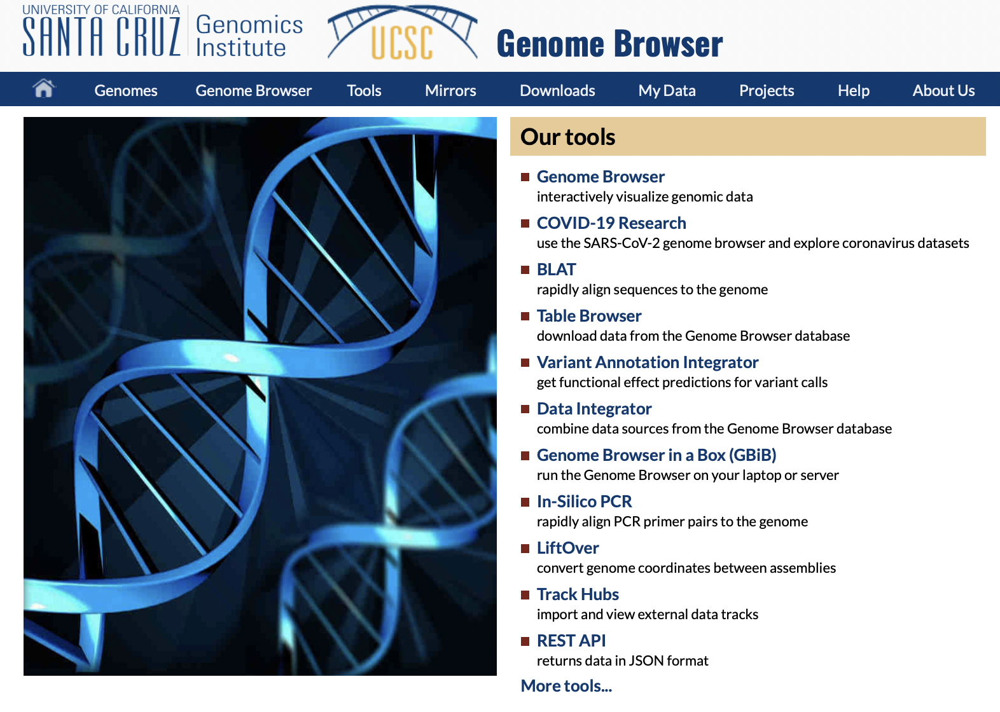

UCSC Genome Browser API
Explored by:
HU, RAN,NGO, KATHIE J,WANG, YE-(Bioinformatics 201, Winter-2022, UCLA)

Description:
UCSC Genome Browser is an interactive website hosted by the University of California, Santa Cruz (UCSC). It provides biomedical researchers with genome sequence and annotation data from major model organisms include human, mouse, fruit fly e.g. Online graphical viewer can be accessed at genome.uscs.edu , the usage of API are detailed in this link
Use cases:
- Extract the nucleotide sequence from human genome according to its genomic coordinates
- Extract genes (annotations) from given regions of the human genome
- Extract expression of transcript variants at given regions of the human genome
- Extract SNPs (Single Nucleotide Polymorphisms) from given regions of the human genome